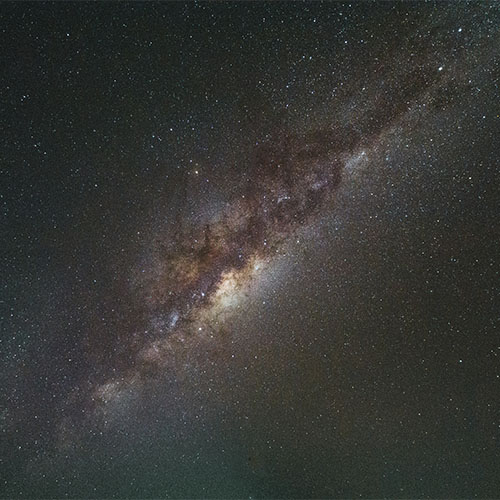
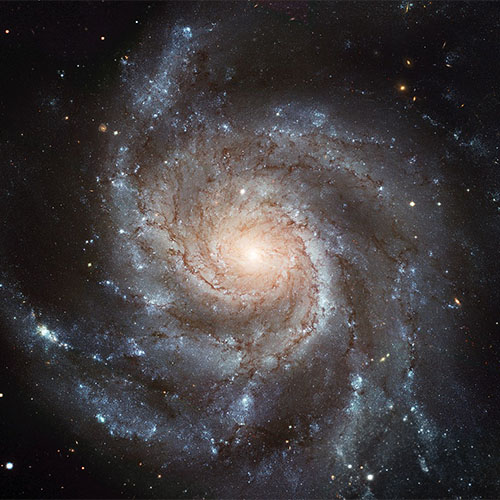
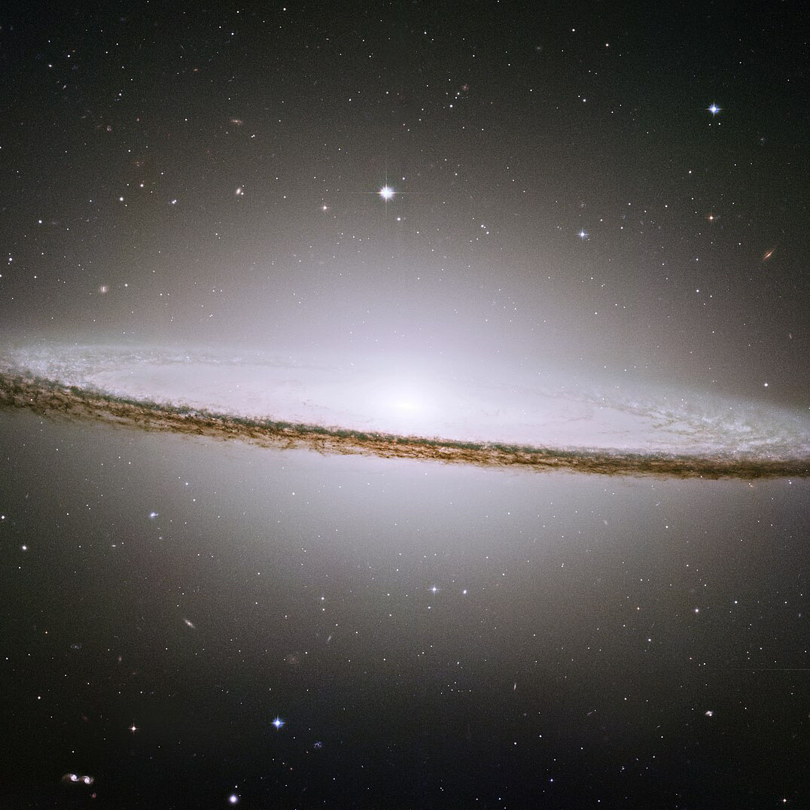

OUR SOLAR SYSTEM
Our solar system is in the Milky Way galaxy and located in an outer spiral arm. This is where we call “home.” The solar system is made up of some major and minor players, all of which interact with each other. The solar system consists of our sun, which is a star, and all that its gravity affects. The planets in our solar system are Mercury, Venus, Earth, Mars, Jupiter, Saturn, Uranus and Neptune.


ABOUT THE PLANETS
The solar system has eight planets: Mercury, Venus, Earth, Mars, Jupiter, Saturn, Uranus, and Neptune. The first four planets from the Sun are Mercury, Venus, Earth, and Mars. These inner planets also are known as terrestrial planets because they have solid surfaces. The giant planets in the outer solar system don't have hard surfaces. Instead, they have swirling gases above a core. Jupiter and Saturn are gas giants. Uranus and Neptune are ice giants.


GALAXIES
Galaxies are huge spans of gas, dust, dark matter, and from a million to trillions of stars. Everything in a galaxy is bound by gravity. Each star in a galaxy is a sun and there are thousands of solar systems in every galaxy. The idea of galaxies is almost too much for us to comprehend, especially because scientists are finding thousands of them out in the universe.
Andromeda Galaxy
The Andromeda Galaxy is also known as “M31” and is a spiral galaxy and the closest neighboring galaxy to our Milky Way. As Andromeda moves through the universe it is bringing along 14 dwarf galaxies, including M32, M110, and M33 (Triangulum Galaxy) It’s one of the few galaxies that we can see from Earth, and that’s saying a lot since it is 2.5 million light-years away from us.
Milky Way Galaxy
For thousands of years, people of all different cultures around the world have gazed up at the skies and watched the beauty of our Milky Way galaxy. Our solar system, including our sun and all of the planets and objects within it, is just a small part of the Milky Way galaxy. All of the stars that we see in the night sky are part of our galaxy, and when you think of the number of them, it’s almost overwhelming.
Pinwheel Galaxy
Although the Pinwheel galaxy is around 21 million light-years from Earth, it has been viewed with the naked eye by people all over the world for thousands of years. This galaxy is also around 70% bigger than our Milky Way galaxy, and on a clear dark night in areas that don’t have light interference from cities or towns, you can see the Pinwheel galaxy with a small telescope or binoculars. The near-perfect spiral of the Pinwheel galaxy displays the dust lanes in the arms of the galaxy that spiral and extend all of the way around the galaxy body.
Sombrero Galaxy
The Sombrero galaxy is considered to be one of the most unusual of the barred spiral galaxies. The official designation of this galaxy is M104 or NGC 4594. As you can guess by the name, it is in the shape of the Mexican sombrero hat, and appears white and brilliant bright with a bulbous core that is surrounded by thick dust lanes that makes up the spirals. A dust lane is the location in a galaxy where stars are formed. This galaxy contains many areas that include all of the elements for being a star nursery. The halo that surrounds the disc is bigger than most and gives it the unique sombrero shape. Like most other galaxies, it’s believed that the Sombrero galaxy has a center that contains a massive black hole.